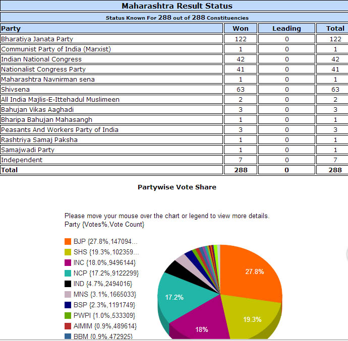

maharashtra assembly elections 2014 results
Maharashtra assembly elections 2014 results will be publish here on 19.10.2014 (Sunday) at morning 8 am, click here for of Maharashtra assembly elections 2014 result websites .
maharashtra assembly elections 2014 Times Now exit poll results
The Chanakya opinion poll say Maharashtra assembly elections 2014 wiil win bjp and their alliance, summery of the survey is bellow
| BJP Alliance | 151 |
| Shiv Sena | 71 |
| Congress I | 27 |
| NCP | 28 |
| MNS | |
| Indipendents | |
| Others |
maharashtra assembly elections 2014 Times Now exit poll results
The Times Now opinion poll say Maharashtra assembly elections 2014 wiil win bjp and their alliance, summery of the survey is bellow
| BJP Alliance | 129 |
| Shiv Sena | 56 |
| Congress I | 43 |
| NCP | 36 |
| MNS | 12 |
| Others | 12 |
click here for maharashtra assembly elections 2014 indiatoday Cicero opinion poll results
click here for detail maharashtra assembly elections 2014 indiatoday Cicero opinion poll results
click here for maharashtra assembly elections 2014 IndiaTV-CVoter opinion poll results
click here formaharashtra assembly elections 2014 live polling vedeos

maharashtra assembly elections 2014 The week-Hansa opinion poll says
The week-Hansa opinion poll say Maharashtra assembly elections 2014 wiil win bjp and their alliance, summery of the survey is bellow
| BJP Alliance | 154 |
| Shiv Sena | 47 |
| Congress I | 25 |
| NCP | 17 |
| MNS | 10 |
| Indipendents | 20 |
| Others | 15 |